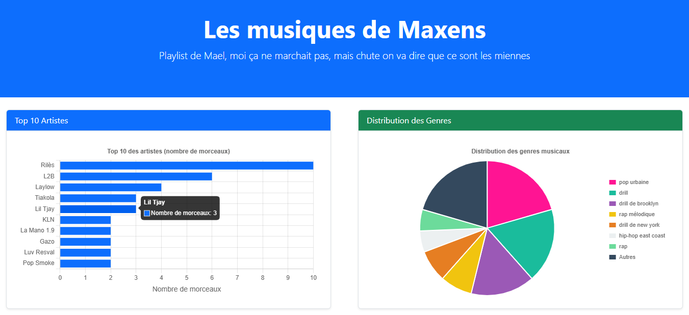
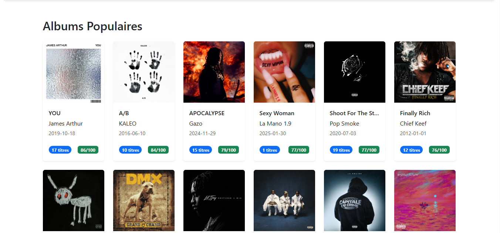
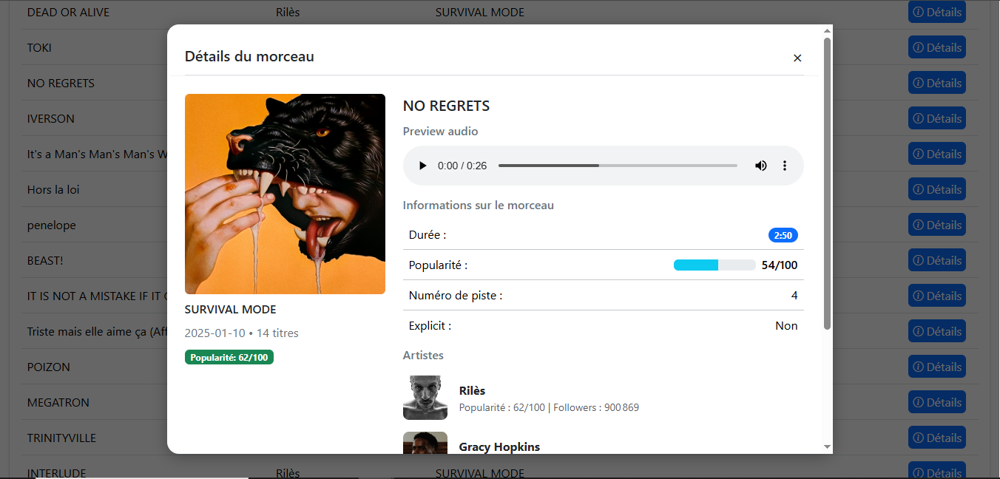
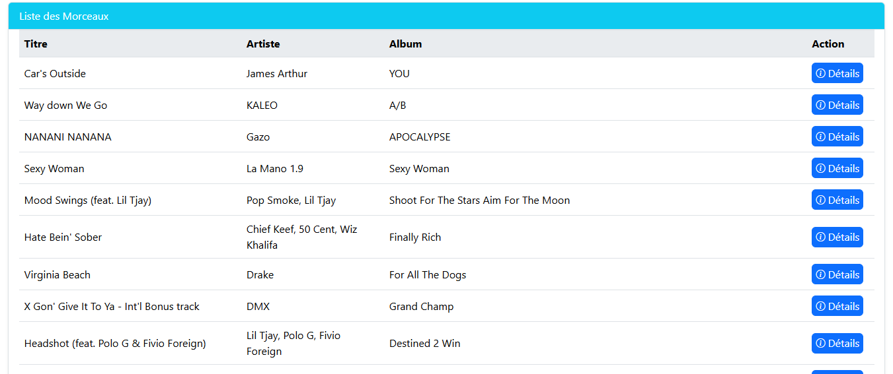

Spotify Stats
Dans le cadre de ma première année de formation, j’ai réalisé un site web interactif à partir de mes données personnelles Spotify.
Ce projet m’a permis de manipuler des données réelles et de les intégrer dans une interface dynamique.
J’ai utilisé JavaScript pour gérer l’affichage des contenus, notamment via des modales (pop-ups) que j’ai conçues en découvrant Bootstrap, un framework que j’ai appris à utiliser au fil du projet.
Cette expérience m’a permis de mieux comprendre le fonctionnement du DOM, la structure responsive, et l’importance d’une navigation claire.



